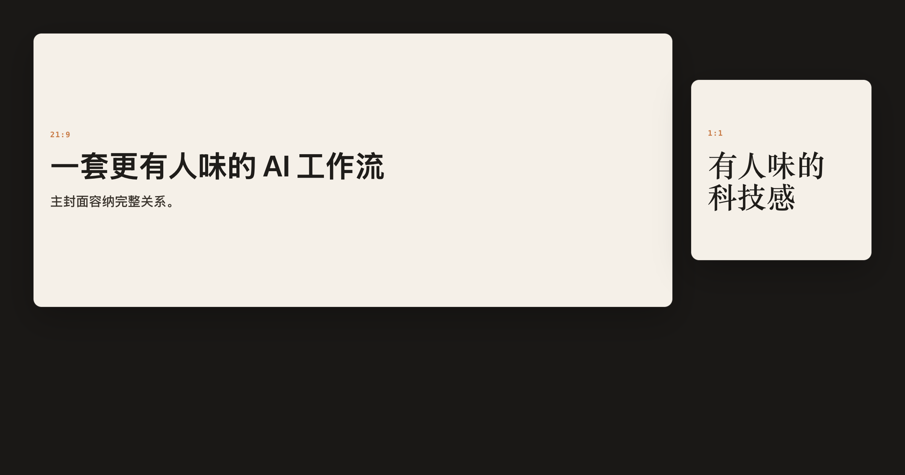
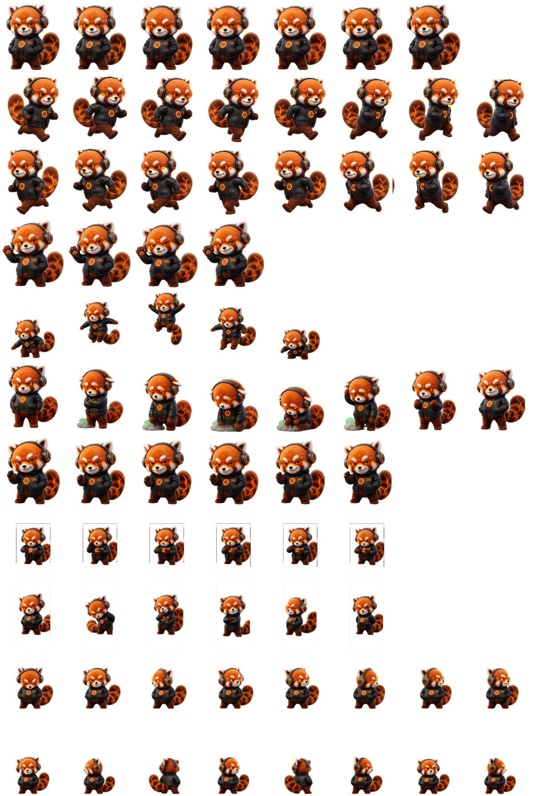

视觉 / LOKI 改造
Loki 社交卡片
把文章重新组织成图文、封面对和有证据的知识卡片。

文章、产品说明，或需要讲清楚的知识。
每张图让人一眼看懂什么。证据图必须清楚，中文层级先于装饰。
参考通用生产逻辑，以 Loki Design System 改造。这里展示既有成品，不是在线生成器。
散场以后，
选一个想用的方法，抽出它的工作卡。
把文章重新组织成图文、封面对和有证据的知识卡片。

文章、产品说明，或需要讲清楚的知识。
每张图让人一眼看懂什么。证据图必须清楚，中文层级先于装饰。
参考通用生产逻辑，以 Loki Design System 改造。这里展示既有成品，不是在线生成器。
这一页，先不聊工作。
杯子空了，冰块还在。

一个日常小互动，不发生真实点单。